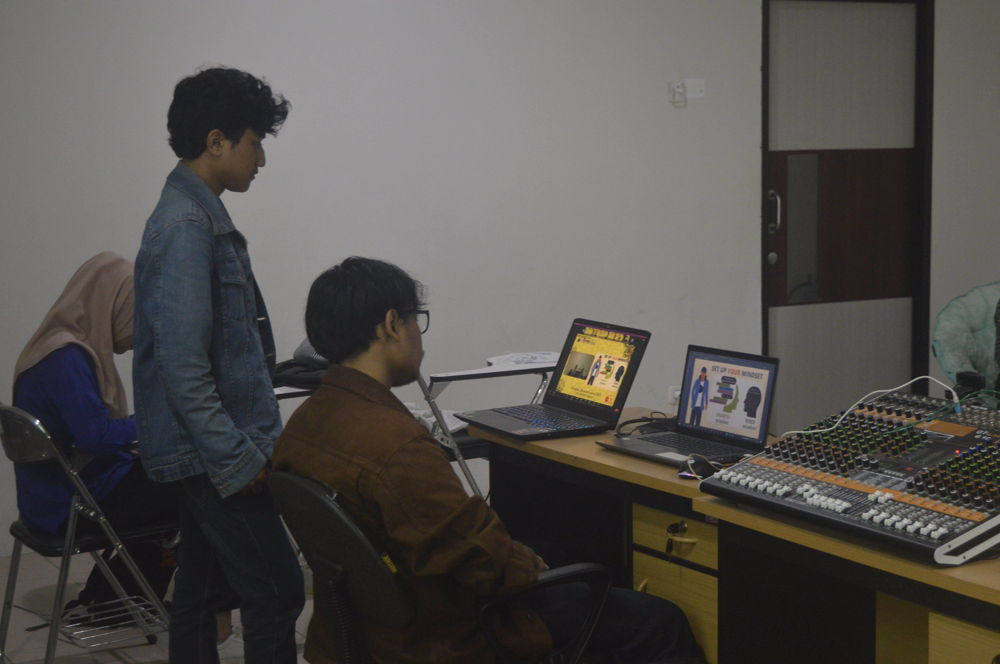

PKKMB Dewangkara Maetala 2022. Berpartisipasi dalam dua divisi dalam waktu yang berbeda. Pra-PKKMB membantu Divisi PDD dan selama hari H PKKMB bertugas dalam Divisi Broadcast
2023

HMSI IT Telkom Surabaya. Menjabat sebagai Staf Departemen Kominfo selama Kabinet Semarak. Menangani proker SIMAGAZINE Edisi 02 dan 03 dan lain-lain terkait PDD sejumlah proker salah satunya Anagata Amerta Fest. 2022
2021-2022

3rd Dies Natalies ITTS. Pengalaman kepanitiaan pertama sekaligus permulaan saya terjebak ke lingkaran setan PDD/Broadcasting.
2021